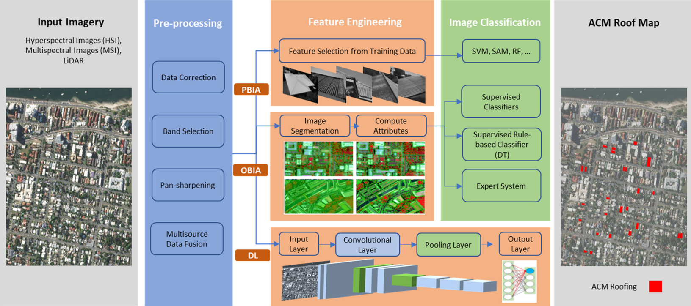

// Sorting by polygons
var withRandom = polygons.randomColumn('random');
var split = 0.7;
var trainingPartition = withRandom.filter(ee.Filter.lt('random', split));
var testingPartition = withRandom.filter(ee.Filter.gte('random', split));
print(trainingPartition, "train")
print(testingPartition, "test")6 Classification Ⅰ
6.1 Summary
This week’s learning covered image classification. This is based on the pattern recognition or machine learning to turn every pixel in the image into one of classification. Image classification is applied in many areas like agriculture monitoring, air pollution, forest monitoring and urban green spaces assessment.
6.2 Conclusion of the process of analysing remotely sensed images
Combining the previous studies and articles, I think the analysis of remotely sensed images includes: 1. Data obtained – 2 pre-processed- 3. image enhancement-4. Factor choosing -5. Predict modelling(classification/regression)-6. Result assessment. Image classification belongs to the fifth step, which directly affects the final research results.
6.3 Approaches to image classification
6.3.1 Unsupervised classification
These methods are applied to identify data with unknown land cover classes. Data were labelled into different categories using ML methods like clustering (k-means, DB-scan) based on spectral features. This reduces the influence of the human factor. The initial result of unsupervised classification may have mixed categories, so it always needs downscaling methods like PCA to optimise.
6.3.2 Supervised classification
These methods are the Classifier learns pattern in the data and puts the labels onto new data. It includes Parametric methods and Non-parametric methods. Recent studies tend to use machine learning/expert systems or spectral hybrid analyses. The steps in supervised classification include class definition, pre-processing, training, pixel assignment, and accuracy assessment.
6.3.2.1 Parametric methods
They are based on the assumption that the data follow a certain distribution pattern (normal distribution). These are traditional methods. The advantage is the clarity of the calculation process. However, they have strict requirements on data distribution and are only applied to small data volumes and simple solutions.
6.3.2.2 Non-parametric methods
They can apply to complex calculation processes, do not rely on the data distribution and are very popular now. They are computation-heavy and require a large amount of data to train the model.
ML methods have high accuracy but are poor in interpretation. It is difficult to describe the reasons for classification. Overfitting is also a main problem in ML. So, in the process of using an ML model, it is important to choose a suitable model using reasonable hyperparameters. When building training and test sets, it is necessary to ensure the classification’s generalisation ability. For example, we tried different ways to choose training and test sets. And get different accuracy.
// Sorting by pixel
var pixel_number= 1000;
var urban_low_points=ee.FeatureCollection.randomPoints(urban_low, pixel_number).map(function(i){
return i.set({'class': 1})})
var water_points=ee.FeatureCollection.randomPoints(water, pixel_number).map(function(i){
return i.set({'class': 2})})
var urban_high_points=ee.FeatureCollection.randomPoints(urban_high, pixel_number).map(function(i){
return i.set({'class': 3})})
var grass_points=ee.FeatureCollection.randomPoints(grass, pixel_number).map(function(i){
return i.set({'class': 4})})
var bare_earth_points=ee.FeatureCollection.randomPoints(bare_earth, pixel_number).map(function(i){
return i.set({'class': 5})})
var forest_points=ee.FeatureCollection.randomPoints(forest, pixel_number).map(function(i){
return i.set({'class': 6})})
var point_sample=ee.FeatureCollection([urban_low_points,
water_points,
urban_high_points,
grass_points,
bare_earth_points,
forest_points])
.flatten()
.randomColumn();
var split=0.7
var training_sample = point_sample.filter(ee.Filter.lt('random', split));
var validation_sample = point_sample.filter(ee.Filter.gte('random', split));6.4 Application
Remotely sensing image classification is an important method of feature identity. Asbestos-containing material (ACM) roofs were widely used in many residential buildings because of their good heat preservation properties. However, airborne asbestos can cause serious damage to human health, especially to the respiratory system. Recently, Italy and Poland have introduced relative policies: Progressive removal of ACM roofs. Remote sensing imagery can help with the implementation of policies quickly and effectively. Using high-resolution images (like Sentinel-2) can help the government remotely monitor the distribution of ABM roofs. This reduces the cost of surveys in the field.

Because the material of roofs has similar spectral properties. Therefore, identification ACM need higher resolution and spectral requirements. Hyperspectral imaging (HIS) has been widely used in studies of ACM roof mapping. There are lots of pixel-based image analysis (PBIA) approaches being used in studies like spectral angle mapper, convolutional neural networks (CNN) and random forest (RF). Accuracy varies from method to method. Convolutional neural networks (CNN) seem to have the highest accuracy.

Maurizio Tommasini analysed WorldView-3 satellite imagery with Pansharpening and used the Roof Classify Plugin in QGIS. The author chose RF in machine learning to do classification. The method can detect 90% of ACM roofs. This is a Supervised classification that needs preparation classified files and images with labels. But PBIA has its limitation: due to spectral variations, pixels on the same roof may be misclassified. This leads to a loss of accuracy.

Deep learning is also applied to identification. It relies on its ability to handle large amounts of data well. DL can be analysed more accurately in the studies of ACM roof mapping, which demands high-resolution data. CNNs can automatically learn complex spatial features through hierarchical convolutional operations. Małgorzata Krówczyńska using CNNs to training the data. The OA of the training and the validation of the training were 93% and 86%. It performs better than RF and SAM. CNNs can ignore the influences from the neighbourhood pixel. So, it is more suitable for studies about urban roof cover identification. In the future, we can use multi-temporal remote sensing data to monitor roof abatement changing trends. It helps us learn about the effectiveness of the implementation of government policies.
6.5 Reflection
This week, I learned the application of ML in remote sensing image classification. In particular, deep learning methods have a high accuracy for feature recognition. Through remote sensing image classification, the land cover can be identified easily. It can be used in roof cover identification to reflect the results of relative urban renewal policies like the removal of ACM roofs. It can help monitor policy implementation. Remote sensing images are also valuable for disaster assessment, such as evaluating infrastructure damage caused by wars. However, it is often limited by data accessibility and computational cost. Mueller et al. (2021)
However, to identify the building-level images, we need high-resolution and a huge amount of computation, which may cost a lot of money. That is opposite to the low-cost and large-scale monitoring, which are the original goals to use remote sensing data sets. Therefore, Future research should focus on improving the classification accuracy of open-access and low-resolution datasets. Using methods like super-resolution techniques or image enhancement (like texture) can enhance low-resolution satellite images, the SAR data could provide complementary information. Through these methods, the remote sensing data can be used in more areas to monitor the policy results. The lower costs and easy methods to get data will enable more developing countries to use remote sensing for policy monitoring and disaster recovery. This can help with expanding the global applicability of remote sensing image classifications.